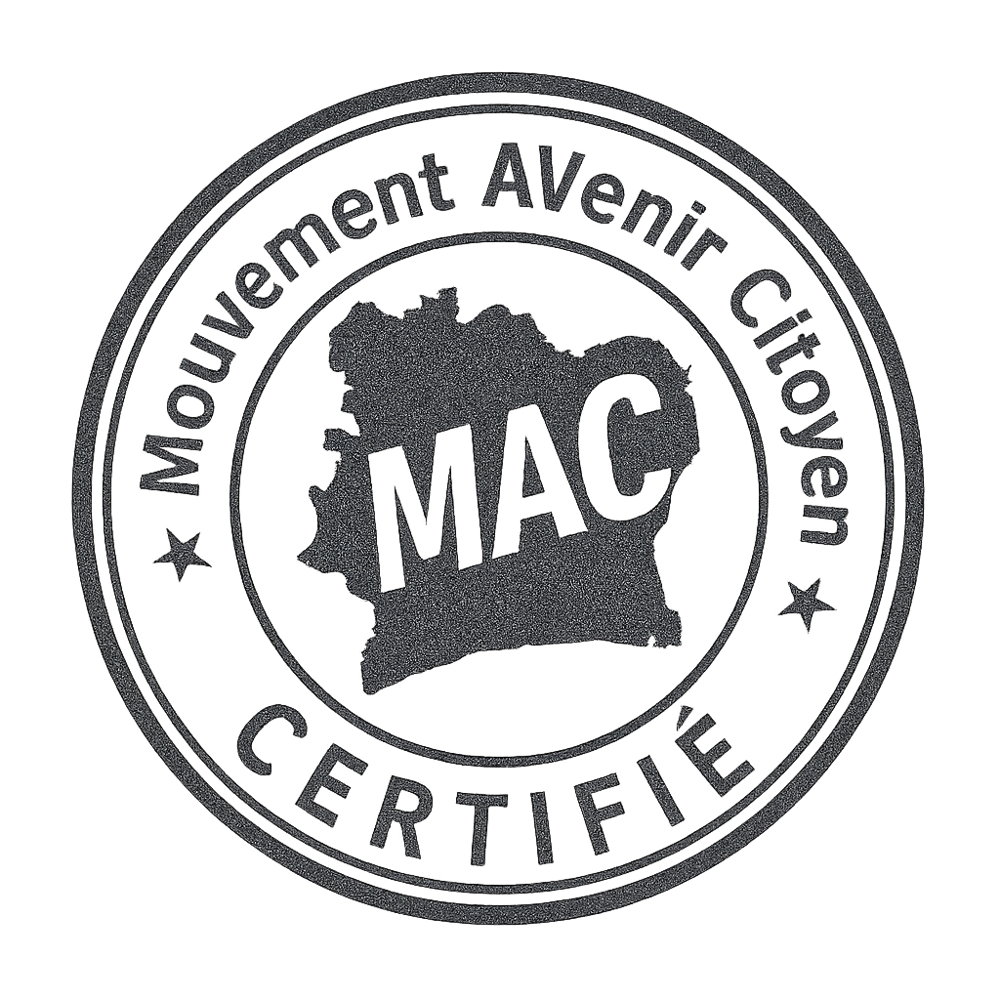
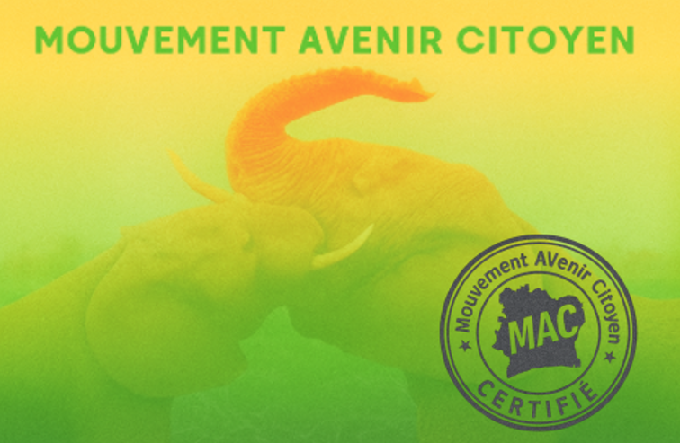
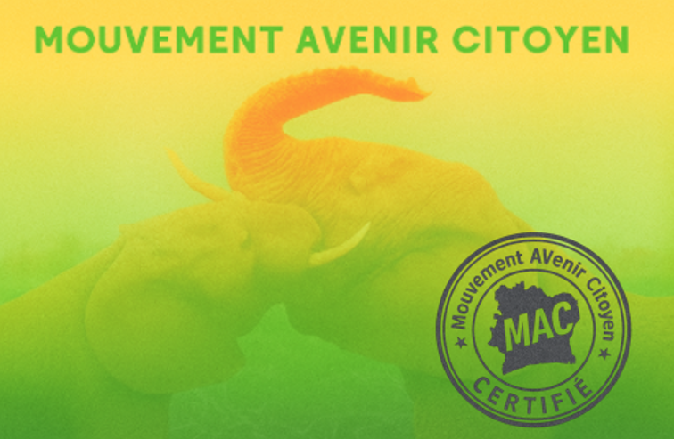

📅 Lancement officiel de MAC 2025
Le 18 Octobre 2025 marque la naissance du Mouvement Avenir Citoyen (MAC), une initiative citoyenne engagée pour l’avenir, la justice sociale et la valorisation des talents ivoiriens. Ce jour symbolique scelle notre volonté collective de bâtir un mouvement structuré, transparent et porteur d’espoir.

 

Nous invitons toutes les personnes partageant nos valeurs à nous rejoindre et à contribuer à cette dynamique citoyenne. Le MAC est désormais en marche.